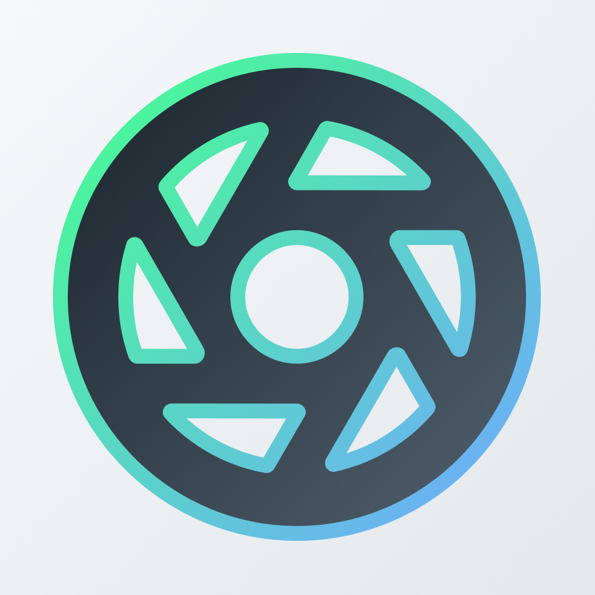

StreamCam
Use your iPhone as a webcam in your livestreams. Supports mosts streaming software out there (OBS Studio, Twitch Studio, Streamlabs, ...)
Screenshots

{kind=link}
{kind=link}
{kind=link}
{kind=link}
Description
Livestreaming on Twitch/Youtube and ready for the face reveal? Looking for a webcam but they're all either expensive, or just terrible quality?
Since you have an iPhone, why not simply use its amazing camera?
With StreamCam, this is possible! StreamCam allows you to use the amazing camera in your iPhone directly in your live streams.
Besides, with StreamCam, there’s no need for any extra hardware or drivers. It doesn't even need to be plugged-in! Simply open the app, copy the url and you're ready to go!
Features
- Use your iPhone as a livestream webcam
- Super low latency, high speed, pro-quality video in many resolutions, up to and including 4K, 1080p HD, 720p, and 360p
- Beautiful in both Dark Mode & Light Mode
- Performance friendly: StreamCam does all the processing on your iOS device
- Works in landscape or portrait mode with full rotation controls
- Switch between any of your device’s front and back cameras in real-time
- Works with OBS Studio, Twitch Studio, StreamLabs & many more
- Easy Multicam Solution: have another iPhone lying around? Use it too for an extra camera angle
- No cables needed! Works with Wi-Fi
- No extra software needed! StreamCam runs a browser source directly
- Works with Mac, Windows & Linux
- No ads, ever